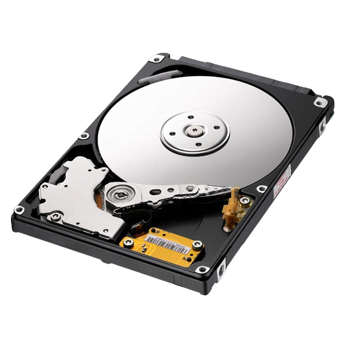
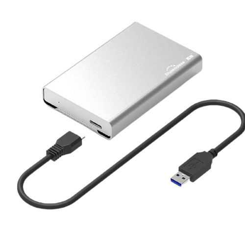
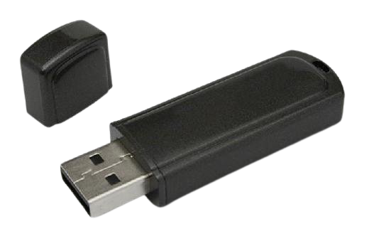

Dating right back to the advent of the personal computer, all systems have come equipped with some form of secondary storage. When a user loads data into a computer, the inkirmation is stored temporarily in the RAM — tithe computer. was turned off, this data would be lost. Secondary storage devices ensure that data is stored permanently so. that it can be used again at a later date. This section will consider the various types of secondary storage and the media used. Throughout the chapter, you will notice that the term byte is used to measure the size of memory or storage. Typically; storage sizes or file sizes are measured in kilobytes (kB), megabytes (MB), gigabytes.'(GB) and terabytes (TB) as shown in the table below.
| Storage size | Number of bytes | Number of bytes as power of 10 |
|---|---|---|
| 1 KB | 1000 Bytes | 10³ Bytes |
| 1 MB | 1 000 000 Bytes | 10⁶ Bytes |
| 1 GB | 1 000 000 000 Bytes | 10⁹ Bytes |
| 1 TB | 1 000 000 000 000 Bytes | 10¹² Bytes |
Note that this is different to memory sizes as used internally in the computer where: 1 KB = 1 024 (2¹⁰) bytes, 1 MB = 1 048 576 {2²⁰) byte, 1 GB = 1 073 741 824 (2³⁰) bytes and 1 TB = 1 099 511 627 776 (2⁴⁰) bytes: These values are all powers of 2. This section reviews the various types of secondary storage devices available. These are either internal or external (that is, plug-in devices) to the computer. Devices fall into the three different types of storage media:
- Magnetic
- Optical
- Solid state
This page has quite a large amount of information, so if you want a brief summary of it all you can watch this video:
Magnetic Storage Media
Magnetic storage media depend on the magnetic properties of certain materials (iron and nickel alloys being the most common). Magnetic material is coated on the surface of a disk or tape that can be magnetised in such a way as to represent a l or a 0. Many hard disk drives are made up of more than one disk and these disks are known as platters. Each platter is made from glass, ceramic, or aluminium coated in a nickel alloy that can be magnetised. In the case of tape, plastic that is coated in a magnetic material is used to store the data.
Fixed/internal hard disk drive (HDD)
Fixed hard disk drives are available on all computers and are the main method used for data storage. On a PC this is usually a fixed hard disk with read/write heads allowing data to be written to or read from the disk surface. The disk surface is coated in a magnetic film that allows data to be stored by altering the magnetic properties to represent binary 1s or 0s (the fundamental units of computer memories). The hard disks usually store the disk operating system (DOS) and other systems software, as well as applications software and files. Applications software (such as spreadsheets and word processors) also needs a hard drive to allow them to quickly retrieve and save data.
Uses
- To store the operating system, systems software and working data files.
- Storing applications soLvare that needs fast retrieval and storage of data.
- Used in real-time systems (for example, robots, control of a chemical plant where data for the process is stored to allow real-time operations) and in online systems (for example, booking airline tickets or automatic stock control using EFTPOS, which allows immediate updating of the stock files).
- Used in file servers for computer networks.
Advantages
- They have a very fast data transfer rate and fast access times to data.
- They have very large memory capacities.
Disadvanteges
- Can be easily damaged if the correct shutdown procedure is not carried out; this can lead to a head crash which would result in a loss of data.
- They have many moving parts when compared to, for example solid state drives (SSDs).
- Their read/write operation can be quite noisy compared to SSDs.
Portable Hard Disk Drives
These devices work in much the same way as fixed hard disk drives but are usually connected to the computer via the USB (universal serial bus) port and can be disconnected and used on different computers. The disks are generally capable of storing more data than the equivalent optical disk (CD, DVD and so on).
Uses
- They can be used as backup systems to prevent loss of data.
- They can be used to transfér data/fi1es/software between computers.
Advantages
- The data access time and data transfer rate is very fast.
- They can be used as a method of transferring information between computers.
- They have a large memory capacity.
Disadvanteges
- they can be easily damaged if dropped or subjected to a strong magnetic field; as with fixed hard disk drives, an incorrect shut-down procedure could also lead to loss of data.
Magnetic Tapes
A magnetic tape is a very thin strip of plastic that has been coated in a magnetic layer. They are read and written to by a read/write head. the data is stored in magnetic areas that represent 1s and 0s. Data is read from the tape using serial access (see earlier description). This type of storage is useless in a real-time or online applications (due to the very slow data access speeds) and is best suited to offline or batch processing.
Uses
- In applications where batch processing is. used, for example, clearing bank cheques, utility billing (gas, electricity, water) and producing payslips; in these applications there is no need for any specific processing order and speed of data access is not essential.
- Used as a backup media since all the data needs to be stored.
- Used in long-term archiving of data; magnetic tapes have huge data storage capacities and are known to be very stable, which makes them ideal for long-term storage.
Advantages
- They are generally less expensive (per byte) than the equivalent hard disk.
- It is a very robust technology (they don't deteriorate very much over time). so they have a huge data storage capacity.
- The data transfer rate is actually fast (this should not be confused with data access time, which is very slow for magnetic tapes).
Disadvanteges
- Very slow data access times (need to read all the earlier records on the tape until the required record is found)
- When updating, another tape is needed to store thermal updated version.
- They are affected by magnetic fields; a strong magnet can corrupt data stored on the tape.
Solid State Storage Media
Solid State Drives (SSD)
Solid State Drives (SSD) are rapidly taking over from HDDs. They have no moving parts. and all data is retrieved at the same rate no matter where it is stored. They don't rely on magnetic properties; the most common type of solid state storage devices store data by controlling the movement of electrons within NAND* chips. The data is stored as 0s and 1s. in millions of tiny transistors within the chip. This effectively produces a non-volatile rewritable memory.
*NAND flash memory is a type of non-volatile storage that does not require power to retain data. NAND flash memory stores data in an array of memory cells made from floating-gate transistors which are insulated from each other by an oxide layer. NAND is.a type of logic gate and is basically one of the building blocks of many electronic circuits including solid state storage devices.
However, a number of solid state storage devices sometimes use electronically erasable programmable read-only memories (EBPROM) technology. The main difference is the use of NOR* chips rather than NAND. This makes them faster in operation; however, devices using EEPROM are considerably more expensive than those that use NAND technology. EEPROM also allows data to be read or erased in single bytes at a time. Use of NAND only allows blocks of data to be read or erased. This makes EBPROM technology more useful in certain applications where data needs to be accessed or erased in byte-size chunks.
*NOR Flash memory is also a type of non-volatile storage; a NOR gate is a type of logic gate that made up many electronic circuits. NOR gates work in a different way to NAND gates, but the differences are outside the scope of this website. Essentially, solid state memories made from NOR gates allow faster read and write operations. than those made from NAND gates, but the storage devices cost much more to manufacture — consequently most solid state storage device use NAND gate technology.
Because of the cost implications, the majority of solid state storage devices use NAND technology. The two are usually distinguished by the terms flash (uses NAND) and EEPROM (uses NOR).
So, what are the main advantages of using SSD rather than HDD? The main advantages of SSDs are summarised below:
- they are more reliable (no moving parts to go wrong)
- they are considerably lighter (which makes them suitable for laptops)
- they don't have to get ‘up to speed’ before they work properly
- they have a lower power consumption
- they run much cooler than HDDs (both these points again make them very suitable for laptop computers)
- because there are no moving parts, they are very thin
- data access is considerably faster than HDD.
The main drawback of SSD is the questionable longevity of the technology. Most solid state storage devices are conservatively rated at only 20 GB write operations per day over a three-year period — this is known as SSD endurance. For this reason, SSD technology is not used in internet servers, for example, where a huge number of write operations take place every day. However, this issue is being addressed by a number of manufacturers to improve the durability of these solid state systems.
Memory sticks/pen drives
Memory sticks/pen drives can store several gigabytes of data and use the solid state technology described above. They are usually connected to a computer through the USB port and power to operate them is drawn from the host computer. They are extremely small and very portable. Most operating systems recognise these storage media, which means no additional software is needed to operate them.
Some expensive software now uses these storage methods (sometimes referred to as portable flash drives) as a form of security. They plug into the computer using the USB port and are known as dongles. The software installed on a computer sends out a request (in encrypted form) to the dongle asking for an encrypted validation key. Thus a person trying to carry out software piracy would have to break the code on the dongle fast before they could use the software. Some systems go one stage further and have key bits of software stored on the dongle in encrypted form. The software looks for these pieces of encrypted code to enable it to run. This gives an added security benefit to the software.
Uses
- Transporting files between computers or used as a backup store.
- Used as a security device to prevent software piracy (known as a dongle).
Advantages
- Very compact and portable media.
- Very robust.
- Doesn't need additional software to work on most computers.
- They are not affected by magnetic fields.
Disadvanteges
- Can't write-protect the data/files.
- Easy to lose (due to their small physical size).
- The user needs to be very careful when removing a memory stick from a computer — incorrect removal (for example, while it is still doing a read/write operation) will corrupt the data on the memory stick, rendering it useless.
Flash Memory Cards
These are a form of electrically erasable programmable read-only memory (EEPROM) and are examples of solid state memories.
Uses
- Storing photos on digital cameras.
- Used as mobile phone memory cards.
- Used in MP3 players to store music files.
- Used as a backup store in hand-held computer devices.
Advantages
- Very compact and can be easily removed and used in another device or for transferring photos directly to a computer or printer.
- Since they are solid state memories, they are very robust.
Disadvanteges
- Expensive per gigabyte of memory when compared to hard drive disks.
- Have a finite life regarding the number of times they can be read from or written to.
- Have a lower storage capacity than hard disks.